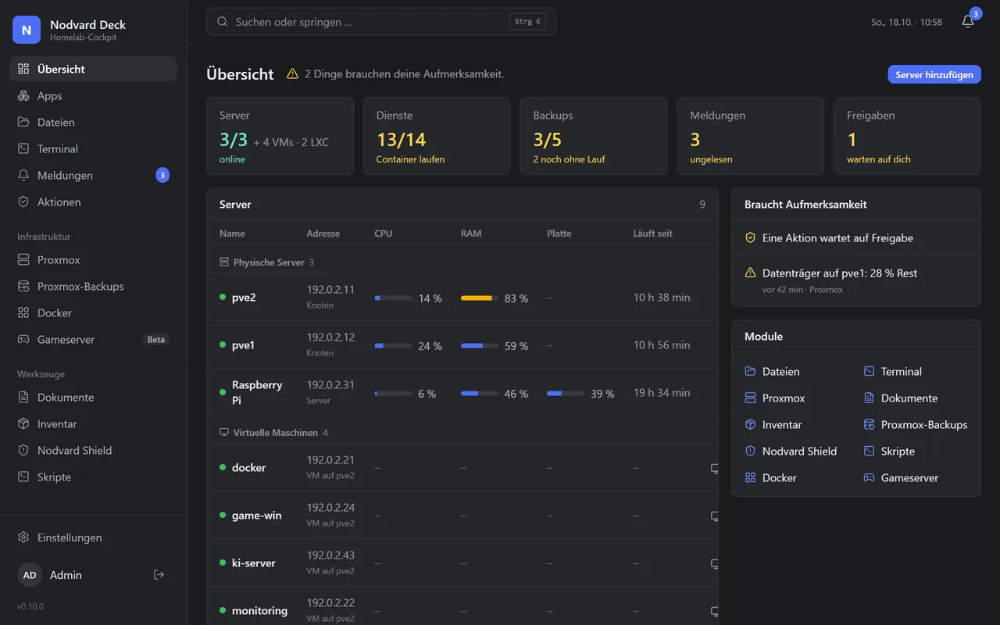
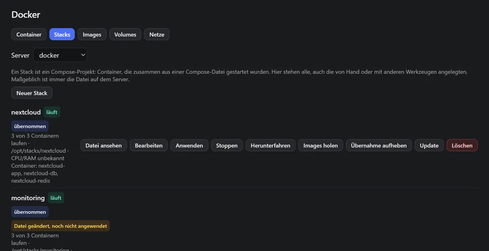
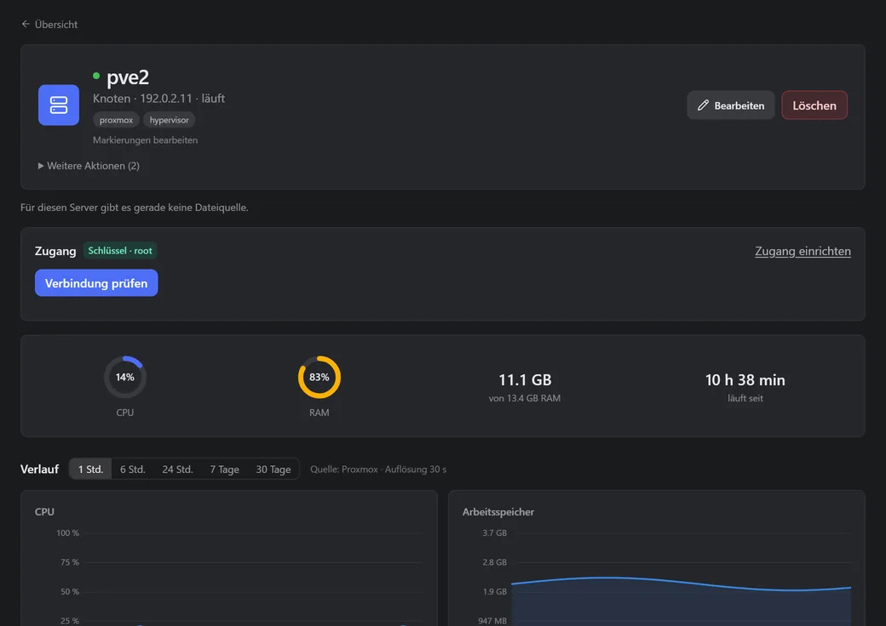
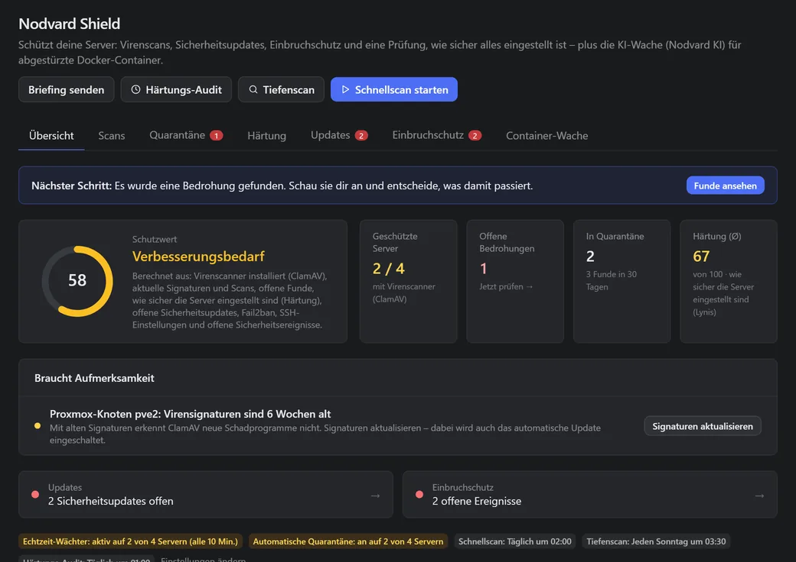
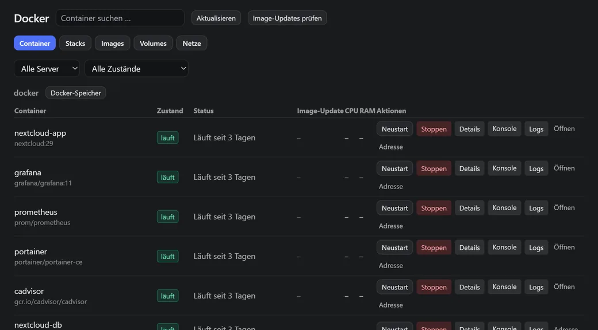

Your homelab on one page.
Nodvard Deck shows your servers, Proxmox, Docker containers and backups in one web interface. It runs in your home and is free for personal use.
docker compose up -dHow to install it

The overview with sample data. Beta, runs in Docker on a Raspberry Pi 4 or 5 and on any x86-64 machine. The interface is in German for now.
What Deck does
Changes go through approvals: Deck suggests, you confirm. You decide what may run without asking.

Docker with stacks New
All containers on your servers on one page. Edit Compose stacks as text or in a form, update them with a way back and move them over from Portainer. The volumes with your data stay.
More about Docker
Servers and Proxmox
Every server gets its own page with load, services and pending updates. Start and stop VMs and LXC on Proxmox right here, the console runs in your browser. Proxmox is optional.
More about servers
Nodvard Shield
Virus scans with ClamAV, hardening checks with Lynis, pending security updates and unusual logins. Shield shows what it finds. You decide what happens next.
More about ShieldAlso included
Backups
All Proxmox backups at a glance. Deck warns you when one is missing or has failed.
Apps
A start page with tiles for your services. Deck finds containers with a web interface on its own.
Integrations
Uptime Kuma, Home Assistant, Plex, Jellyfin, Synology and more as tiles in Deck. Many of them still in beta.
Vault
Passwords, API tokens and SSH keys are stored encrypted in Deck. Deck can create a separate key for each server.
Notifications
One list for everything that needs your attention. Sent to your phone via ntfy, Telegram, Discord and others if you like.
Approvals and accounts
Roles, two-factor sign-in and a log that lists every action.
Nodvard Dock Beta
Only want to manage your containers? Nodvard Dock is Deck with just the Docker part, as its own lean image. It is also meant for anyone moving away from Portainer CE. It arrives with version 0.11.0.

Installed with three commands
You need a machine with Docker and Docker Compose. Nothing is built, the ready-made image comes from GitHub.
mkdir ~/nodvard-deck && cd ~/nodvard-deck
curl -fsSL -o compose.yml https://raw.githubusercontent.com/nodvard/deck/main/deploy/compose.standalone.yml
docker compose up -dThen open http://<your-server>:8080 in your browser. docker compose logs nodvard-deck shows the setup code.
Free for personal use.
- No account with Nodvard
- No subscription, no ads
- Source code you can read
Using it in a company needs permission. The license in plain words
Questions, ideas, bugs
Discord is the quickest place for questions. Bugs and wishes go to GitHub. Nodvard Deck is made by Nico Benks and runs around the clock in a real homelab.